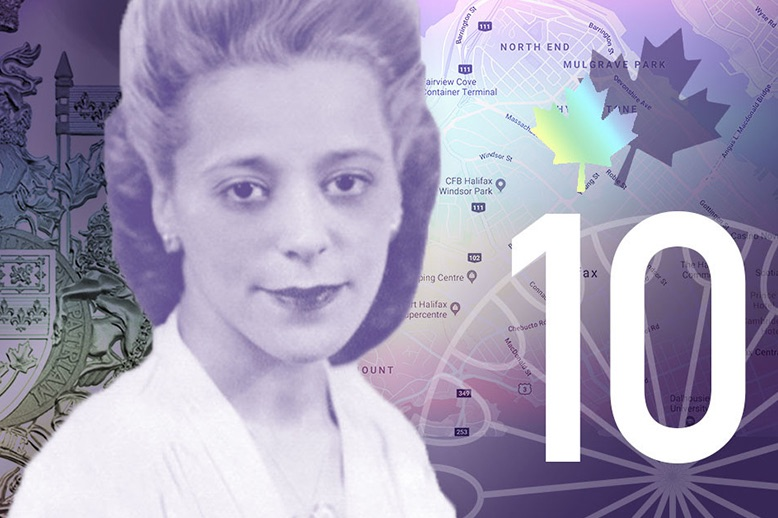
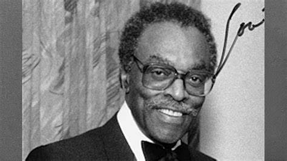
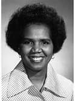
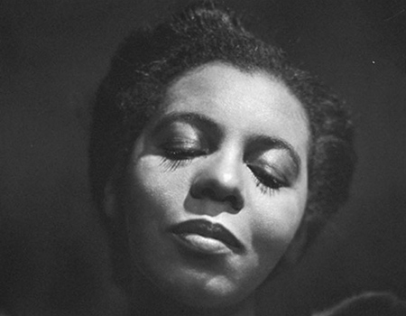
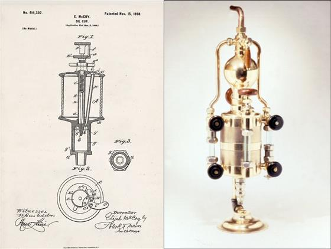
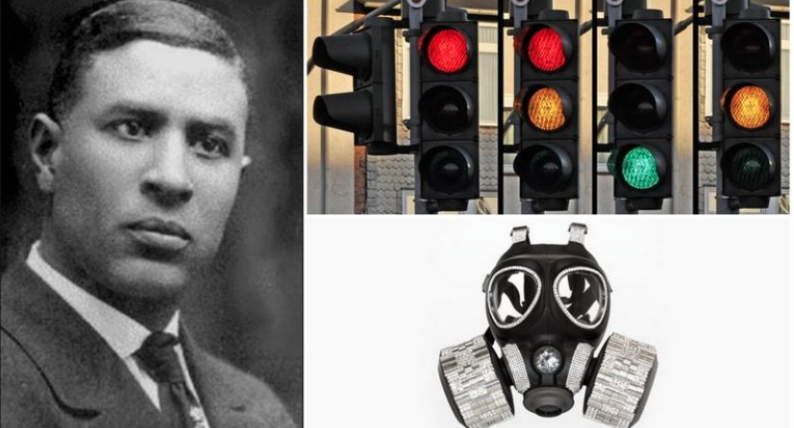
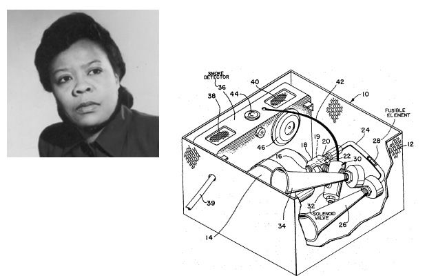
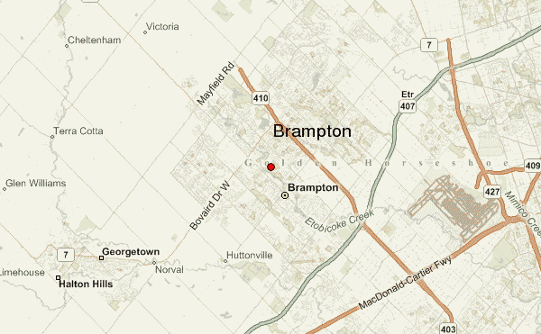

Significant Figures Canadian Black History Month




PORTFOLIO
Inventions from the black community
Some inventors include Elijah McCoy, Garrett Morgan, Marie Van Brittan Brown, Philip Emeagwali




CONTACT
INFO
Just incase you want to talk!

Brampton, Canada
Email: 833991@pdsb.net
Email: 833991@pdsb.net
, Leave me a note: